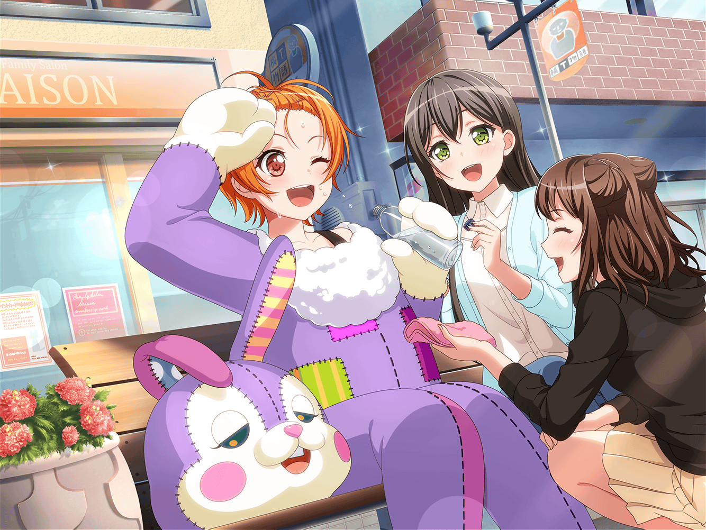

市ヶ谷家 蔵
香澄
みんな集まったかな？
えーっとそれじゃあ……オホン……
香澄
第１回……
『マリー・アンドロメダを人気キャラにしよう大作戦！』の
会議をはじめまーす！
はぐみ
イエーイっ！
待ってましたーっ！
有咲
てか、第１回って……
この会議、何回もするつもりかっ？
たえ
もちろん。
相手はミッシェルだし、しっかり戦略を立てておかないと
有咲
はぁ……
そもそも、その『ふわキャラ選手権』ってなんなんだよ。
まったく意味不明なんだけど……
有咲
ま、しのごの言ってても仕方ねーか。
ばーちゃんが、みんなが来るならって
これ買ってきてくれたから、食べながら会議するぞ
香澄
わぁ、おまんじゅうだ！
おいしそー！
はぐみ
はぐみも差し入れ持ってきたよー！
とーちゃんが持ってけって言って、包んでくれたんだ
香澄
はぐの家のコロッケ～！
おまんじゅうとコロッケ食べながら
おしゃべりなんて……贅沢すぎる～！
有咲
まんじゅうとコロッケって、
すごい食べ合わせだな……じゃなくて！
おしゃべりじゃなくて、会議だろーが、会議！
香澄
はっ！
そうだった……！
有咲
つかさー、いいわけ？
その、北沢さんがマリー・アンドロメダに入るってことは、
ミッシェルと戦うことになるし……
たえ
辛い戦いになるかもしれないよ
香澄
……会議を始める前に、はぐの本心を聞きたいんだ。
だから、みんなで集まったっていうのもあって……
ミッシェルと、戦うことになっても……いいの？
はぐみ
みんな……
はぐみ
はぐみなら大丈夫だよ。
ミッシェルと正々堂々勝負するって、決めたもん！
たえ
本当に？
はぐみ
もちろん！
はぐみの全部を、ミッシェルにぶつけるつもりだよ！
香澄
そっかー、よかった！
はぐがそういう気持ちでいてくれるなら、
安心して会議できるよ！
有咲
覚悟はできてるってわけか。
で、どんな作戦でいくんだ？
香澄
目立つことが大事なんだよね？
なら、うーん……とにかく、負けないようにしようよ！
例え相手がミッシェルでも！
たえ
うん、私もそう思う。負けないの、大事！
有咲
い、いやそりゃそうなんだけど……
だから、負けないような具体的な作戦を……
はぐみ
うーん……負けないように……
なにがなんでも勝てばいいんじゃないかな？
負けないよ！
香澄
うん！
とにかく勝とう！
有咲
だーかーらー！
具体的な案を出せって言ってんの！
たえ
具体的……具体的……
はぐみ
……はぐみ、思ったんだけど……
マリーってうさぎでしょ？ うさぎって、足が速いし、
ダッシュするのがいいと思う！
たえ
うんうん、うさぎはすっごく足が速いよ
香澄
いいじゃんっ！
ビュンビュン走るかわいいうさぎ！
香澄
あっ、ねえねえ、ジャンプ！
ジャンプはどう！？
うさぎだし、ジャンプは必須だよね！？
はぐみ
それいいっ！
ビュンって走って、バク転とかどうかな？
たえ
うん。すごくうさぎっぽい。
賛成
有咲
いや、さすがに無理だろ！
キグルミ着てバク転なんて！
香澄
はぐならできるよね？
はぐみ
うん！ たぶん大丈夫だと思う
有咲
できんのかよっ！
はぐみ
作戦決定だね！
ビュンってして、ぴょん！ うんっ、いけそうっ！
香澄
でも、相手はミッシェルだよ！
もうちょっとアイディア出したほうがいいかも！
例えばー……
香澄
アイディアいっぱい出たねー！
これならいけるっ！
有咲
大量の花火を持って登場……大砲でマリーを撃ち出す……
爆炎を背に、マリーがポーズを決める……
有咲
どれも実際にやるってなったら
ストップかかるレベルだぞ……
たえ
だけど、その中のどれかひとつでも実現できたら、
絶対に勝てるよね
はぐみ
うん！
はぐみも絶対いけると思う！
有咲
はぁ、ツッコミが追いつかねーし
ツッコむ気力もねー……
はぐみ
みんな、今日はありがとう！
はぐみの心配してくれたり、ステキな案出してくれたり！
はぐみ
はぐみ、がんばるね！
当日はばっちりマリー・アンドロメダを目立たせちゃお！
香澄
いいね、いいね！
それじゃあ景気づけに……円陣組もうっ！
有咲
は、はぁ？
円陣！？
たえ
いいね、円陣。
ほら、有咲も
はぐみ
円陣！ 円陣！
有咲
……わ、わかったよ。
けど、１回だけだからな
香澄
も〜有咲ってば〜！ ちゃんと肩組んでくれなきゃ
円陣にならないよー
有咲
わ、わかってるっての！
香澄
よし！
はぐ、当日はよろしくね！
はぐみ
まっかせて！
それじゃいくよー！
マリー！ マリー！ 絶対勝つぞ！ えいえい……
はぐみ
ドッカーン！
香澄・たえ
ドッカーン！
有咲
い、いや……
そこは『オー！』じゃねーのかよ！？